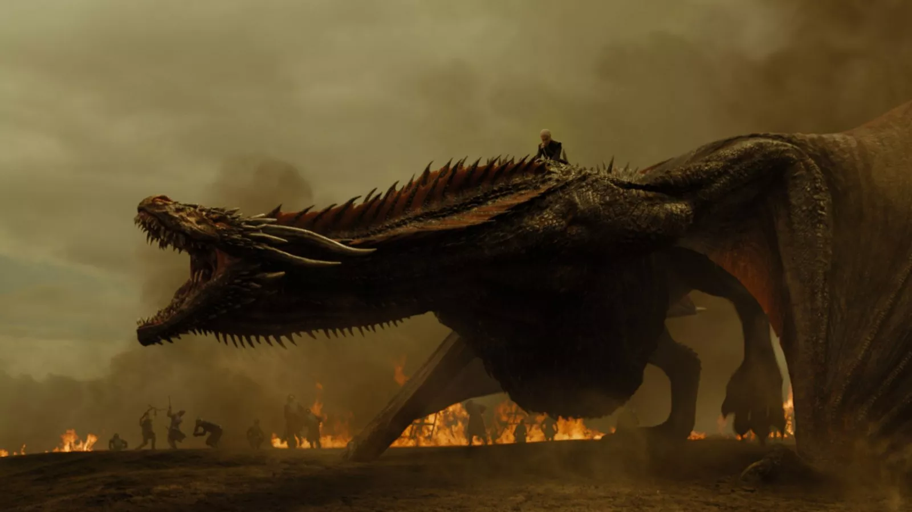

ABOUT DRAGONS
Eastern legends, such as those of China and Japan, dragons are good creatures. They lack wings but can fly, and they live in water. They are thought to control rivers and the rain and wind. In Chinese culture, dragons are symbols of power and luck. dragon, in the mythologies, legends, and folktales of various cultures, a large lizard- or serpent-like creature, conceived in some traditions as evil and in others as beneficent. In medieval Europe, dragons were usually depicted with wings and a barbed tail and as breathing fire. The dragon is a symbol of evil, in both the chivalric and Christian traditions. In the Orient, it symbolizes supernatural power, wisdom, strength, and hidden knowledge. In most traditions, it is the embodiment of chaos and untamed nature.
Dragons are renowned for their magical abilities, which differ depending on what part of the world you're in. They are thought to have blood with magical properties, the ability to breathe fire, flying powers, the power of speech, and sometimes immense wisdom.Draconic language is one of the most unique Dungeons and Dragons languages. Spoken mainly by the Dragons, it's a rare and secret language. Some dragons have wings; others don't. Some dragons can speak or breathe fire; others can't. Some are only a few feet long; others span miles. Some dragons live in palaces under the ocean, while others can only be found in caves and inside mountains, such as Smaug in JRR Tolkein's "The Hobbit."